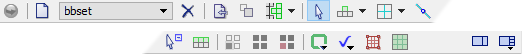
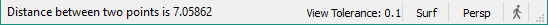
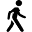

窗格元素
标题栏和菜单
标题栏右侧有 3 或 4 个按钮，具体取决于窗格是停靠还是浮动。
| 停靠 | |
| 浮动 |
- 三角形按钮显示窗格菜单。
- 第二个按钮隐藏该窗格。
- 浮动标题栏中的第三个按钮可将窗格最大化，或将其恢复为先前的大小。
- 最后一个按钮关闭该窗格。
工具栏
与任何窗格一样，当该窗格处于活动状态时，其工具栏会作为主工具栏显示在程序菜单栏旁边。此外，通过按块体构建标题栏上的窗格菜单按钮并选择“显示工具栏”，也可以在窗格内（紧靠其标题栏下方）显示或隐藏该工具栏。

各工具的含义如下。
| 图标 | 命令/模式 | 说明/注释 |
|---|---|---|
 |
执行/停止切换按钮 | 执行或停止计算循环；更多信息请参阅 工具栏主题（Toolbar topic）。 |
 |
添加新集合… | 创建新的块体集合。 |
| （列表） | 集合 | 这是所有块体集合的列表。当前活动的集合会被显示。从列表中选择其他集合，即可使其成为窗格中显示的当前活动集合。 |
 |
删除当前集合 | 删除当前活动的块体集合。 |
 |
导入几何数据… | 导入一组几何数据，其格式可以是 .DXF、.STL 或 .GEOM 文件。请参阅导入几何数据（Importing Geometric Data） |
| 根据几何生成… | 根据加载到当前块体集合中的几何数据生成网格单元或块体。请参阅根据几何数据生成网格单元或块体（Generating Zones or Blocks From Geometric Data） | |
 |
导入块体… | 从已保存的块体集合导入块体。 |
| 选择模式 | 此工具用于选择和操纵对象。它是鼠标的默认模式。请参阅对象的选择和操纵（Selection and Manipulation of Objects）。右键单击该工具按钮可查看说明视图操纵控件的页面——这些控件与绘图窗格中使用的控件相同。 | |
 |
添加块体模式 | 此工具用于向现有块体添加新块体。请参阅添加块体（Adding Blocks） |
| 拆分块体模式 | 此工具用于拆分块体。请参阅拆分块体（Splitting Blocks） | |
 |
控制点模式 | 此工具用于添加和操纵控制点。请参阅曲线棱边和控制点（Curved Edges and Control Points） |
 |
隐藏块体模式 | 在此鼠标模式下，单击块体即可将其隐藏。 |
| 添加层… | 选中一个或多个面后，单击此工具按钮即可向所选面添加一层块体。将弹出一个对话框，要求输入新层的深度。 | |
| 仅显示所选块体 | 选中一个或多个块体后，单击此工具即可隐藏所有未选中的块体。 | |
 |
显示所有块体 | 单击此按钮可使所有块体可见。 |
| 显示坏块 | 如果模型中存在任何无效块体，此按钮将变为可用。单击它将隐藏足够多的良好块体，以便您能够看到可能埋藏在模型内部的坏块。 | |
 |
高亮显示分组 | 在为点、棱边、面或块体指定分组后，此菜单将包含以绿色高亮显示您所选的任何分组的命令。还有一个命令用于显示指定分组中的所有块体，且仅显示这些块体。请参阅高亮显示分组（Highlighting Groups） |
 |
校验 | 此菜单包含有助于确保模型有效的命令。请参阅校验模型（Validating the Model） |
| 自动划分网格单元… | 此命令提供用于对模型应用自动划分网格单元功能的选项。 | |
| 生成网格单元 | 此命令根据块体构建模型创建网格单元。可以在模型窗格或绘图窗格中查看这些网格单元。 | |
 |
显示/隐藏 控制面板 | 切换 控制面板 的显示。有关详细信息，请参阅 工具栏主题（Toolbar topic）。 |
 |
显示/隐藏控件组 | 此按钮是一个下拉列表，其中列出此窗格类型可用的控件组；选择未勾选的项目可在控制面板中显示它，选择已勾选的项目可隐藏它。有关更多信息，请参阅工具栏主题（Toolbar topic）。 |
视图操作
- R 键和 Ctrl+R 键的作用与在绘图窗口中相同，用于重置视图
- 按住鼠标右键可旋转视图
- 鼠标滚轮可放大和缩小视图
- 按住鼠标右键后再按住鼠标左键，可向上/下/左/右拖动视图；或将 Shift 键与鼠标右键配合使用
有关详细信息，请参阅 视图操作快速参考（View Manipulation Quick Reference）。
ESC 键
通常，ESC 键会取消当前操作并使鼠标回到选择模式。ESC 键可取消鼠标拖动、点到点捕捉、退出添加块体模式等。
状态栏
主窗口的状态栏显示与块体构建窗格相关的控件和信息。


状态栏的功能之一是：当您选中两个点时，它会告诉您这两点之间的距离。如果您选中一条棱边，它会告诉您该棱边两端点之间的距离。
“视图容差”是基于视图当前缩放级别和视图控件组中指定的点大小而确定的容差水平。它是屏幕上所示点的近似半径。
下面是对表面/深部模式和透视/平行模式（Surface/Deep and Perspective/Parallel Modes）的说明。
状态栏一角的指示器显示导航处于常规模式还是第一人称模式。使用常规导航时，鼠标滚轮会向视图中心点或鼠标所在对象上的位置放大。在第一人称模式下，鼠标滚轮会调整视图，如同您在模型中穿行。要使用第一人称导航，请在使用鼠标滚轮时按住 Alt 键。（在平行投影模式下，第一人称导航不起作用。）

图 1：常规导航。


图 2：第一人称导航。
| 这些内容对您有帮助吗？… | FLAC3D © 2019, Itasca | 原文更新于 2020 年 10 月 8 日 |